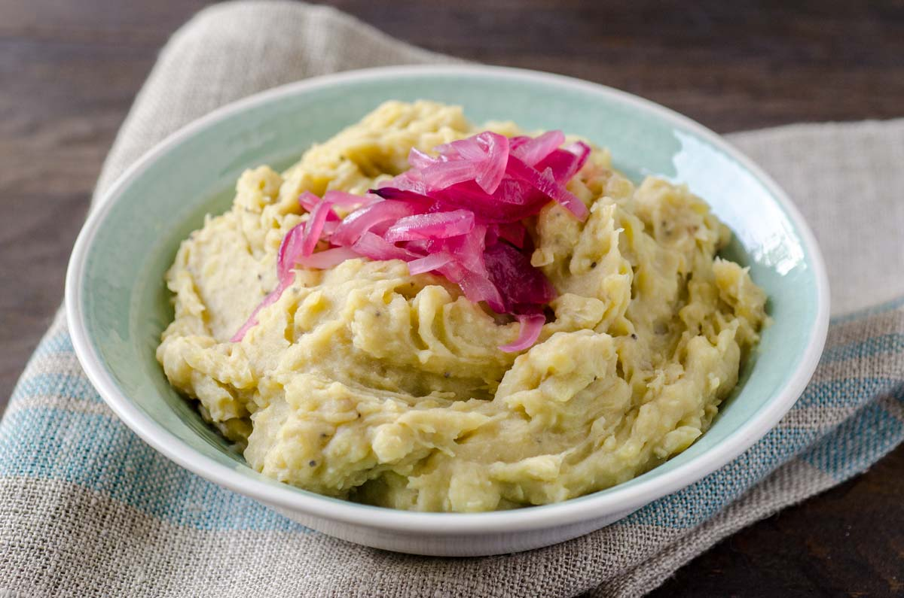

Mangú

Description
Mangú is a smooth puree made from green plantain, it is the most typical component of Dominican breakfast and one of our most popular dishes. Served with "los tres golpes" we could say that it is the official Dominican breakfast. Learning how to do it is essential for those who learn our cuisine.
Ingredients
- 4 green bananas
- 1½ teaspoons salt
- 4 tablespoons butter or olive oil
- ½ cup water at room temperature
Steps
- Peel bananas: Peel the bananas. Cut into eighths (two halves, then the halves into quarters).
- Boil bananas: Boil the bananas in water, to which you have added the salt, until they are very soft. Remove from heat.
- Mash bananas: Mash the bananas just removed from the water with a fork (be careful not to burn yourself). Add butter (or olive oil) and mix well. Add water at environmental temperature and mix until you have a very smooth puree (it will harden a little in a while).
- Serve: Serve the mangú with sautéed onions and fried eggs or scrambled eggs, fried Dominican salami, or fried cheese.